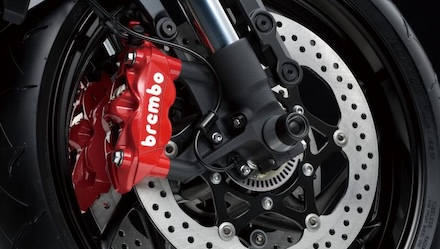
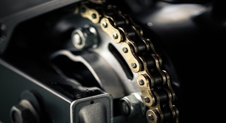
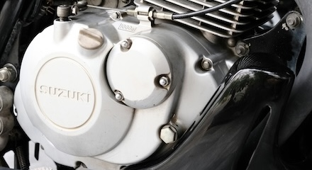
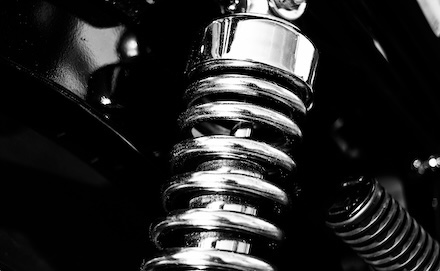
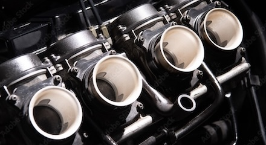
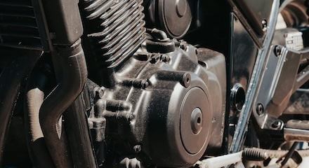

Brakes
Pads, discs, calipers, fluid and investigation of poor brake feel or performance.
Motorcycle repairs · Shrewsbury
Mechanical repairs from everyday wear items to more involved engine, suspension and running problems.
Repair work
If your job is not listed, still get in touch. Motorcycle work is considered case by case.

Pads, discs, calipers, fluid and investigation of poor brake feel or performance.

Inspection, replacement, adjustment and setup of worn final-drive components.

Slipping, dragging, poor engagement and clutch component replacement or adjustment.

Leaking fork seals, fork servicing and other suspension work where appropriate.

Carburettor cleaning and rebuilding, poor running and related fuelling work.

Valve clearances, top-end and internal engine repairs, rebuild work and other involved mechanical jobs.
Symptoms first
Tell us what changed: noises, leaks, vibration, poor running, slipping, overheating, difficult starting or anything else you have noticed. The symptoms are often more useful than an assumed diagnosis.
Suitable repair work may sometimes be possible at home by prior arrangement. We do not provide roadside breakdown assistance or recovery.
Need help with your bike?
Send the bike details and what you’re experiencing. We’ll review the enquiry and contact you to arrange the next step.